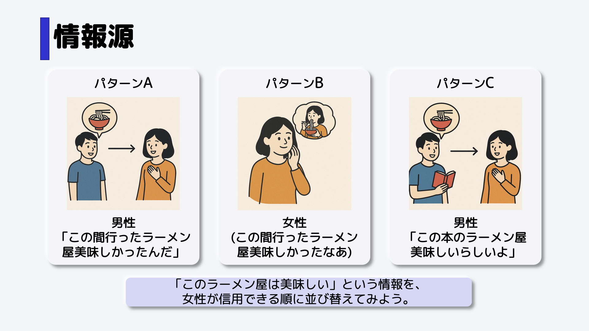
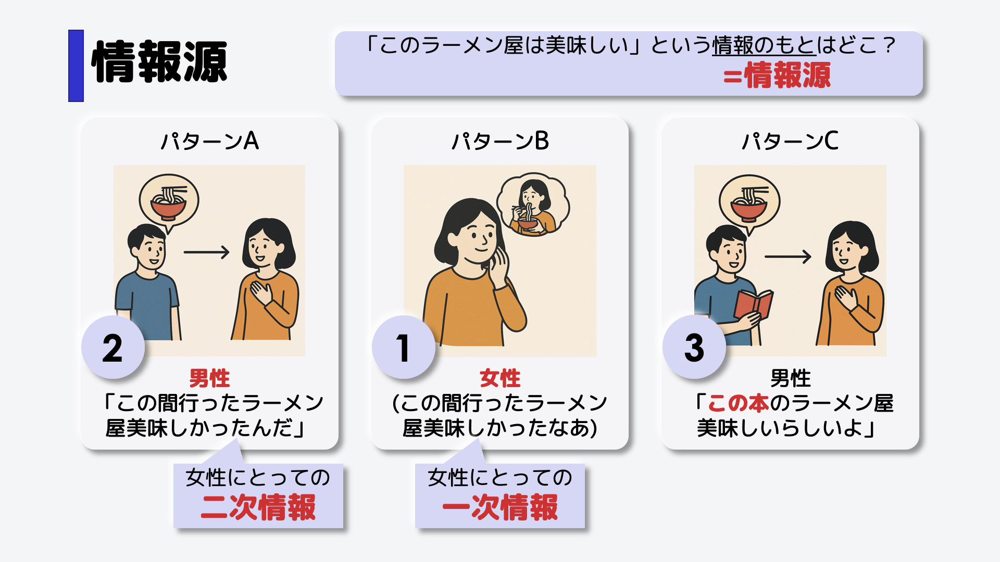

情報源
あなたが女性だとして、「ある特定のラーメン屋が美味しい」という情報を得たとします。
次のパターンA〜Cの情報のうち、信用できると思う順番に並べ替えてみてください。
このような順番になるでしょう。パターンBは自分で食べているので信用度は高いです。
パターンCは、男性も女性もこのラーメンを食べている人はいないので、信用度は低めです。
では、それぞれの情報はどこからきているでしょうか。
太字の通りです。
一次情報と二次情報
このように、情報のもとのことを、情報源（ソース）といいます。
また、「ラーメン屋が美味しい」という情報は、パターンBは女性にとっての一次情報となります。
パターンAは、女性にとっての二次情報となります。
このように情報源には種類があります。